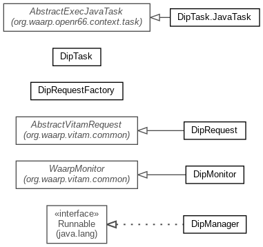

-
Class Summary
| Class |
Description |
| DipManager |
DipManager is the central logic for DIP management between Waarp and
Vitam
|
| DipMonitor |
DipMonitor is the daemon taking care of DipRequests through a
directory containing JSON files
|
| DipRequest |
|
| DipRequestFactory |
Factory that handles DipRequest within a directory
|
| DipTask |
DipTask is a one shot command that will initiate one specific DIP export
operation from a Waarp post task on reception.
|
| DipTask.JavaTask |
Equivalent JavaTask
|
Package org.waarp.vitam.dip Description
DIP package contains all logic to apply a DIP send through Waarp
from Vitam export operation.
Export is a download from Vitam of a DIP (binary file in ZIP format) of
archives. This plugin allows to not use HTTP download but HTTP local
download command of Vitam, using Waarp to transfer the DIP.
Waarp-Vitam Export plugin works as a Vitam Access client as follow:
- Ask for a DIP through Waarp through a post operation of a virtual send
of the request in Vitam DSL in a file.
RequestResponse<JsonNode> exportDIP(VitamContext
vitamContext, JsonNode dslRequest) throws VitamClientException;
- Than the plugin will transfer the file as a request using the Vitam
Client.
- Then it will ask as a pooling for the availability of the DIP:
RequestResponse<ItemStatus> getOperationProcessStatus
(VitamContext vitamContext, String id)throws VitamClientException;
- Then it will get the DIP and will
forward it when ready to the Waarp partner.
Response getDIPById(VitamContext vitamContext, String dipId)
throws VitamClientException;
Documentation:
- http://www.programmevitam.fr/ressources/DocCourante/html/manuel-integration/client-usage.html
- http://www.programmevitam.fr/ressources/DocCourante/raml/externe/ingest.html
- http://www.programmevitam.fr/ressources/DocCourante/javadoc/fr/gouv/vitam/ingest/external/client/IngestExternalClient.html
- http://www.programmevitam.fr/ressources/DocCourante/html/archi/archi-applicative/20-services-list.html#api-externes-ingest-external-et-access-external
- http://www.programmevitam.fr/ressources/DocCourante/html/archi/archi-exploit-infra/services/ingest-external.html
- http://www.programmevitam.fr/ressources/DocCourante/html/archi/securite/00-principles.html#principes-de-securisation-des-acces-externes